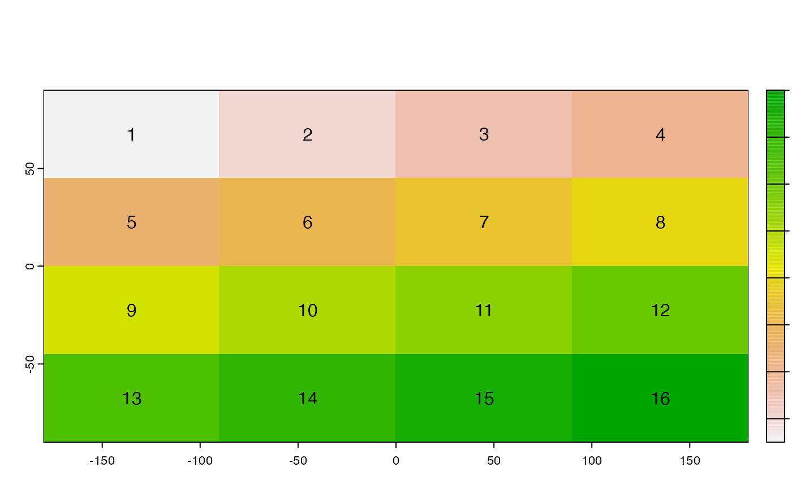
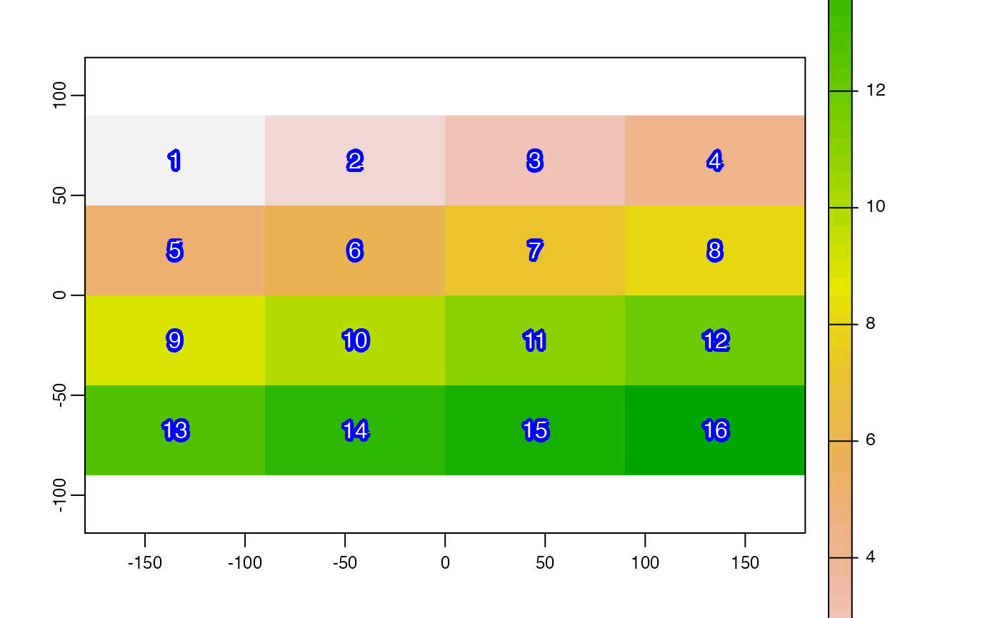
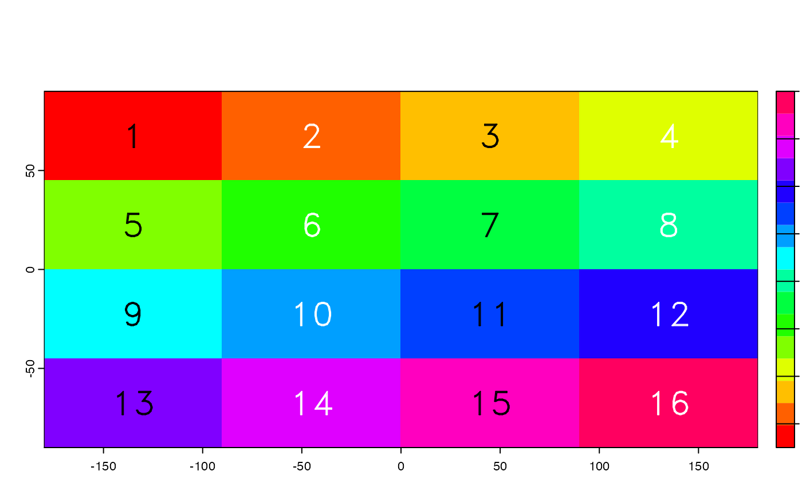

text.RdPlots labels, that is a textual (rather than color) representation of values, on top an existing plot (map).
# S4 method for class 'SpatRaster'
text(x, labels, digits=0, halo=FALSE, hc="white", hw=0.1, jitter=0, ...)
# S4 method for class 'SpatVector'
text(x, labels, halo=FALSE, inside=FALSE, hc="white", hw=0.1, jitter=0, ...)SpatRaster or SpatVector
character. Optional. Vector of labels with length(x) or a variable name from names(x)
integer. How many digits should be used?
logical. If TRUE a "halo" is printed around the text
character. The halo color
numeric. The halo width
logical. Should the text always be placed inside one the sub-geometries?
numeric. The amount of random noise used to adjust label positions, possibly avoiding overlaps. See argument 'factor' in jitter
additional arguments to pass to graphics function text
r <- rast(nrows=4, ncols=4)
values(r) <- 1:ncell(r)
plot(r)
text(r)
set.seed(123)
text(r, jitter = 2, col = "red", halo = TRUE)

plot(r)
text(r, halo=TRUE, hc="blue", col="white", hw=0.2)

plot(r, col=rainbow(16))
text(r, col=c("black", "white"), vfont=c("sans serif", "bold"), cex=2)
